Contents
Processing things: Brewer setup
Warning: Directory already exists. Warning: Directory already exists.
Ozone deviations
year_period =
Columns 1 through 6
2009 2010 2011 2012 2013 2014
Column 7
2015
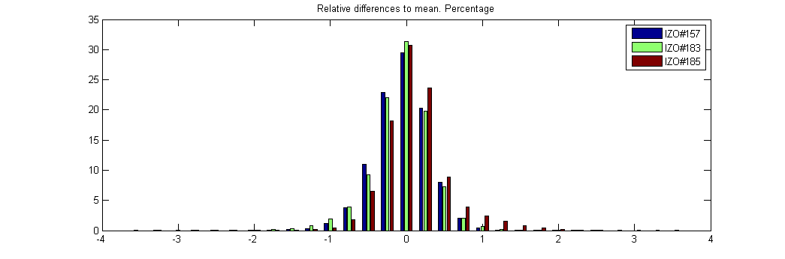 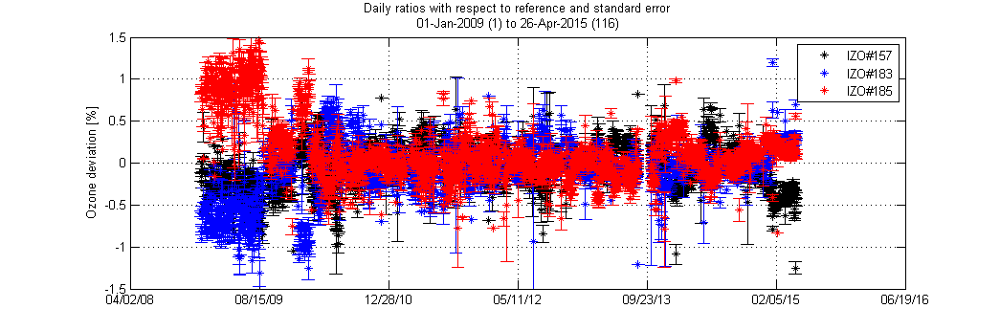 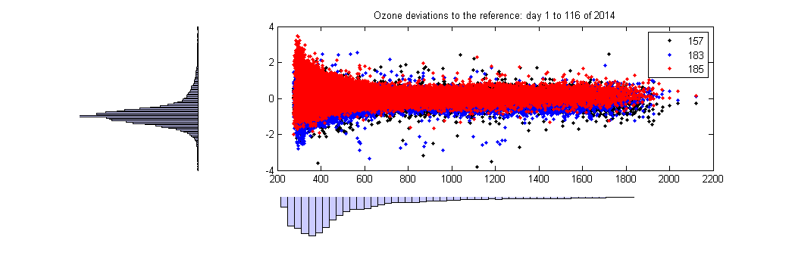 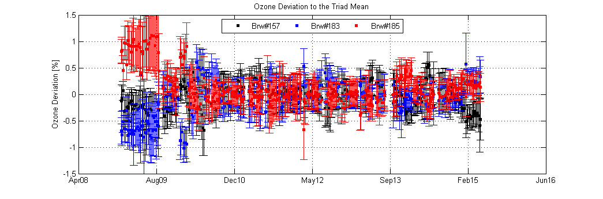 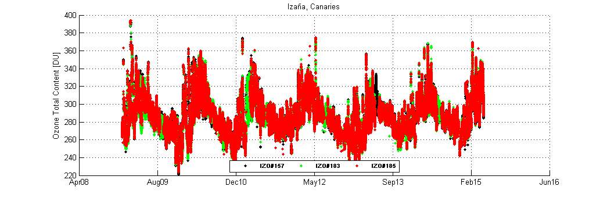 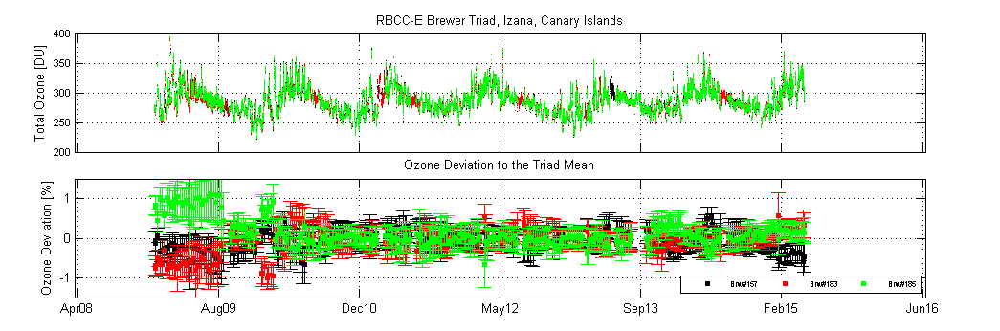 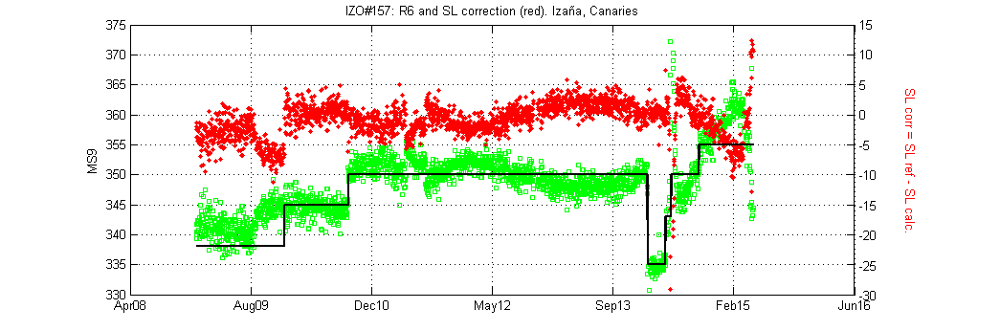 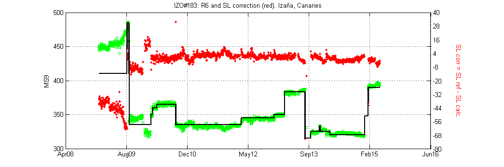 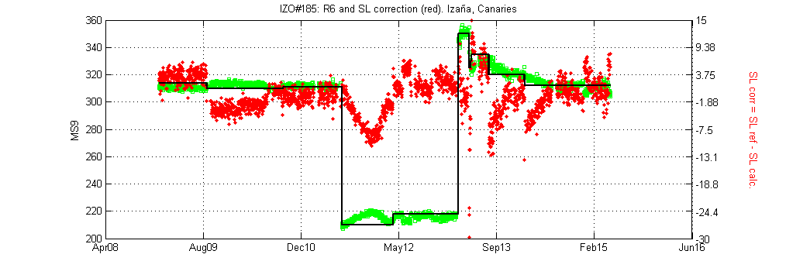 Langley results
Brewer IZO#157: Operative Config.
| 26-Aug-2007 | 17-Jun-2009 | 23-Jul-2009 | 30-Jul-2009 | 04-Sep-2009 | 29-Dec-2009 | 01-Mar-2010 | 30-Mar-2010 | 22-Jun-2010 | 24-Sep-2010 | 30-Nov-2010 | 28-Jan-2011 | 28-Feb-2011 | 13-Apr-2011 | 18-May-2011 | 09-Jun-2011 | 18-Jul-2011 | 22-Aug-2011 | 25-Aug-2011 | 08-Nov-2011 | 11-Jan-2012 | 05-Sep-2012 | 24-Oct-2012 | 30-Apr-2013 | 12-Feb-2014 | 17-Mar-2014 | 29-Apr-2014 | 14-May-2014 | 23-May-2014 | 10-Jun-2014 | 15-Sep-2014 | 18-Dec-2014 | 23-Jan-2015 | 17-Mar-2015 | 10-Apr-2015 | 15-Apr-2015
o3 Temp coef 1 | 0 | 0 | 0 | 0 | 0 | 0 | 0 | 0 | 0 | 0 | 0 | 0 | 0 | 0 | 0 | 0 | 0 | 0 | 0 | 0 | 0 | 0 | 0 | 0 | 0 | 0 | 0 | 0 | 0 | 0 | 0 | 0 | 0 | 0 | 0 | 0
o3 Temp coef 2 | -0.179 | -0.179 | -0.179 | -0.179 | -0.179 | -0.179 | -0.179 | -0.179 | -0.179 | -0.179 | -0.179 | -0.179 | -0.179 | -0.179 | -0.179 | -0.179 | -0.179 | -0.179 | -0.179 | -0.179 | -0.179 | -0.179 | -0.179 | -0.179 | -0.179 | -0.179 | -0.179 | -0.179 | -0.179 | -0.179 | -0.179 | -0.179 | -0.179 | -0.179 | -0.179 | -0.179
o3 Temp coef 3 | -0.3335 | -0.3335 | -0.3335 | -0.3335 | -0.3335 | -0.3335 | -0.3335 | -0.3335 | -0.3335 | -0.3335 | -0.3335 | -0.3335 | -0.3335 | -0.3335 | -0.3335 | -0.3335 | -0.3335 | -0.3335 | -0.3335 | -0.3335 | -0.3335 | -0.3335 | -0.3335 | -0.3335 | -0.3335 | -0.3335 | -0.3335 | -0.3335 | -0.3335 | -0.3335 | -0.3335 | -0.3335 | -0.3335 | -0.3335 | -0.3335 | -0.3335
o3 Temp coef 4 | -0.213 | -0.213 | -0.213 | -0.213 | -0.213 | -0.213 | -0.213 | -0.213 | -0.213 | -0.213 | -0.213 | -0.213 | -0.213 | -0.213 | -0.213 | -0.213 | -0.213 | -0.213 | -0.213 | -0.213 | -0.213 | -0.213 | -0.213 | -0.213 | -0.213 | -0.213 | -0.213 | -0.213 | -0.213 | -0.213 | -0.213 | -0.213 | -0.213 | -0.213 | -0.213 | -0.213
o3 Temp coef 5 | -0.5645 | -0.5645 | -0.5645 | -0.5645 | -0.5645 | -0.5645 | -0.5645 | -0.5645 | -0.5645 | -0.5645 | -0.5645 | -0.5645 | -0.5645 | -0.5645 | -0.5645 | -0.5645 | -0.5645 | -0.5645 | -0.5645 | -0.5645 | -0.5645 | -0.5645 | -0.5645 | -0.5645 | -0.5645 | -0.5645 | -0.5645 | -0.5645 | -0.5645 | -0.5645 | -0.5645 | -0.5645 | -0.5645 | -0.5645 | -0.5645 | -0.5645
O3 on O3 Ratio | 0.3397 | 0.3397 | 0.3397 | 0.3397 | 0.3397 | 0.3397 | 0.3397 | 0.3397 | 0.3397 | 0.3397 | 0.3397 | 0.3397 | 0.3397 | 0.3397 | 0.3397 | 0.3397 | 0.3397 | 0.3397 | 0.3397 | 0.3397 | 0.3397 | 0.338 | 0.3397 | 0.3397 | 0.3375 | 0.3395 | 0.3395 | 0.3395 | 0.3395 | 0.3415 | 0.3415 | 0.3395 | 0.3395 | 0.3395 | 0.3395 | 0.3395
ETC on O3 Ratio | 1605 | 1605 | 1605 | 1605 | 1605 | 1605 | 1600 | 1600 | 1600 | 1605 | 1605 | 1605 | 1605 | 1605 | 1605 | 1605 | 1605 | 1605 | 1605 | 1605 | 1605 | 1615 | 1605 | 1600 | 1590 | 1580 | 1580 | 1580 | 1580 | 1575 | 1585 | 1600 | 1600 | 1600 | 1600 | 1600
Dead time (sec) | 3.2e-008 | 3.2e-008 | 3.2e-008 | 3.2e-008 | 3.2e-008 | 3.2e-008 | 3.2e-008 | 3.2e-008 | 3.2e-008 | 3.2e-008 | 3.2e-008 | 3.2e-008 | 3.2e-008 | 3.2e-008 | 3.2e-008 | 3.2e-008 | 3.2e-008 | 3.2e-008 | 3.2e-008 | 3.2e-008 | 3.2e-008 | 3.2e-008 | 3.2e-008 | 3.2e-008 | 2.8e-008 | 2.8e-008 | 2.8e-008 | 2.8e-008 | 2.8e-008 | 2.8e-008 | 2.8e-008 | 2.8e-008 | 2.8e-008 | 2.8e-008 | 2.8e-008 | 2.8e-008
csn | 1026 | 1026 | 1026 | 1026 | 1026 | 1026 | 1026 | 1026 | 1026 | 1026 | 1026 | 1026 | 1026 | 1026 | 1026 | 1026 | 1026 | 1026 | 1026 | 1026 | 1026 | 1026 | 1026 | 1026 | 1026 | 1026 | 1026 | 1026 | 1026 | 1026 | 1026 | 1026 | 1026 | 1026 | 1026 | 1026
ND filter 0 | 0 | 0 | 0 | 0 | 0 | 0 | 0 | 0 | 0 | 0 | 0 | 0 | 0 | 0 | 0 | 0 | 0 | 0 | 0 | 0 | 0 | 0 | 0 | 0 | 0 | 0 | 0 | 0 | 0 | 0 | 0 | 0 | 0 | 0 | 0 | 0
ND filter 1 | 4288 | 4288 | 4288 | 4288 | 4288 | 4288 | 4288 | 4288 | 4288 | 4288 | 4288 | 4288 | 4288 | 4288 | 4288 | 4288 | 4300 | 4300 | 4300 | 4300 | 4300 | 4300 | 4300 | 4300 | 4300 | 4300 | 4300 | 4300 | 4300 | 4300 | 4300 | 4300 | 4300 | 4300 | 4300 | 4300
ND filter 2 | 9303 | 9303 | 9303 | 9303 | 9303 | 9303 | 9303 | 9303 | 9303 | 9303 | 9303 | 9303 | 9303 | 9303 | 9303 | 9303 | 9320 | 9320 | 9320 | 9320 | 9320 | 9320 | 9320 | 9320 | 9320 | 9320 | 9320 | 9320 | 9320 | 9320 | 9320 | 9320 | 9320 | 9320 | 9320 | 9320
ND filter 3 | 13904 | 13904 | 13904 | 13904 | 13904 | 13904 | 13904 | 13904 | 13904 | 13904 | 13904 | 13904 | 13904 | 13904 | 13904 | 13904 | 13860 | 13860 | 13860 | 13860 | 13860 | 13860 | 13860 | 13860 | 13860 | 13860 | 13860 | 13860 | 13860 | 13860 | 13860 | 13860 | 13860 | 13860 | 13860 | 13860
ND filter 4 | 21687 | 21687 | 21687 | 21687 | 21687 | 21687 | 21687 | 21687 | 21687 | 21687 | 21687 | 21687 | 21687 | 21687 | 21687 | 21687 | 21660 | 21660 | 21660 | 21660 | 21660 | 21660 | 21660 | 21660 | 21660 | 21660 | 21660 | 21660 | 21660 | 21660 | 21660 | 21660 | 21660 | 21660 | 21660 | 21660
ND filter 5 | 25061 | 25061 | 25061 | 25061 | 25061 | 25061 | 25061 | 25061 | 25061 | 25061 | 25061 | 25061 | 25061 | 25061 | 25061 | 25061 | 25000 | 25000 | 25000 | 25000 | 25000 | 25000 | 25000 | 25000 | 25000 | 25000 | 25000 | 25000 | 25000 | 25000 | 25000 | 25000 | 25000 | 25000 | 25000 | 25000
R6 | 338 | 338 | 338 | 338 | 345 | 345 | 345 | 345 | 345 | 350 | 350 | 350 | 350 | 350 | 350 | 350 | 350 | 350 | 350 | 350 | 350 | 350 | 350 | 350 | 335 | 335 | 343 | 343 | 350 | 350 | 355 | 355 | 355 | 355 | 355 | 355
R5 | 580 | 580 | 580 | 580 | 580 | 580 | 580 | 580 | 580 | 590 | 590 | 590 | 590 | 590 | 590 | 590 | 590 | 590 | 590 | 590 | 590 | 590 | 590 | 590 | 580 | 580 | 580 | 580 | 580 | 580 | 580 | 580 | 580 | 580 | 580 | 580
F#2_C | 0 | 0 | 0 | 0 | 0 | 0 | 0 | 0 | 0 | 0 | 0 | 0 | 0 | 0 | 0 | 0 | 0 | 0 | 0 | 0 | 0 | 0 | 0 | 0 | 0 | 0 | 0 | 0 | 0 | 0 | 0 | 0 | 0 | 0 | 0 | 0
F#3_C | 0 | 0 | 0 | 0 | 0 | 0 | 0 | 0 | 0 | 0 | 0 | 0 | 0 | 0 | 0 | 0 | 0 | 0 | 0 | 0 | 0 | 0 | 0 | 0 | 0 | 0 | 0 | 0 | 0 | 0 | 0 | 0 | 0 | 0 | 0 | 0
F#4_C | 0 | 0 | 0 | 0 | 0 | 0 | 0 | 0 | 0 | 0 | 0 | 0 | 0 | 0 | 0 | 0 | 0 | 0 | 0 | 0 | 0 | 0 | 0 | 0 | 0 | 0 | 0 | 0 | 0 | 0 | 0 | 0 | 0 | 0 | 0 | 0
Brewer IZO#183: Operative Config.
| 28-Jun-2008 | 18-Jun-2009 | 25-Jul-2009 | 20-Aug-2009 | 05-Sep-2009 | 25-Sep-2009 | 01-Jan-2010 | 02-Mar-2010 | 19-Mar-2010 | 22-Apr-2010 | 24-Sep-2010 | 30-Nov-2010 | 08-Jun-2011 | 18-Jul-2011 | 04-Aug-2011 | 07-Nov-2011 | 01-Feb-2012 | 07-Mar-2012 | 24-Mar-2012 | 28-May-2012 | 15-Jun-2012 | 07-Jul-2012 | 20-Sep-2012 | 23-Oct-2012 | 31-Oct-2012 | 15-Nov-2012 | 10-Dec-2012 | 07-Mar-2013 | 03-Jun-2013 | 25-Jun-2013 | 20-Aug-2013 | 09-Oct-2013 | 29-Oct-2013 | 19-Dec-2013 | 26-Dec-2013 | 11-Jan-2014 | 12-Feb-2014 | 12-Mar-2014 | 24-Apr-2014 | 01-Dec-2014 | 24-Dec-2014 | 24-Jan-2015 | 10-Apr-2015
o3 Temp coef 1 | 0 | 0 | 0 | 0 | 0 | 0 | 0 | 0 | 0 | 0 | 0 | 0 | 0 | 0 | 0 | 0 | 0 | 0 | 0 | 0 | 0 | 0 | 0 | 0 | 0 | 0 | 0 | 0 | 0 | 0 | 0 | 0 | 0 | 0 | 0 | 0 | 0 | 0 | 0 | 0 | 0 | 0 | 0
o3 Temp coef 2 | 0 | 0 | 0 | 0 | 0 | 0 | 0.7 | 0.7 | -0.2 | -0.2 | -0.01637 | -0.01637 | -0.01637 | -0.01637 | -0.01637 | -0.01637 | -0.01637 | -0.01637 | -0.01637 | -0.01637 | -0.01637 | -0.01637 | -0.01637 | -0.01637 | -0.01637 | -0.01637 | -0.01637 | 0.0292 | 0.0292 | 0.0292 | 0.0292 | 0.0292 | 0.0292 | 0.0292 | 0.0292 | 0.0292 | 0.0292 | 0.0292 | 0.0292 | 0.0292 | 0.0292 | 0.0292 | 0.0292
o3 Temp coef 3 | 0 | 0 | 0 | 0 | 0 | 0 | 0 | 0 | 0.26 | 0.26 | 0.03818 | 0.03818 | 0.03818 | 0.03818 | 0.03818 | 0.03818 | 0.03818 | 0.03818 | 0.03818 | 0.03818 | 0.03818 | 0.03818 | 0.03818 | 0.03818 | 0.03818 | 0.03818 | 0.03818 | 0.2149 | 0.2149 | 0.2149 | 0.2149 | 0.2149 | 0.2149 | 0.2149 | 0.2149 | 0.2149 | 0.2149 | 0.2149 | 0.2149 | 0.2149 | 0.2149 | 0.2149 | 0.2149
o3 Temp coef 4 | 0 | 0 | 0 | 0 | 0 | 0 | 0.1 | 0.7 | 0.44 | 0.44 | 0.20944 | 0.20944 | 0.20944 | 0.20944 | 0.20944 | 0.20944 | 0.20944 | 0.20944 | 0.20944 | 0.20944 | 0.20944 | 0.20944 | 0.20944 | 0.20944 | 0.20944 | 0.20944 | 0.20944 | 0.384 | 0.384 | 0.384 | 0.384 | 0.384 | 0.384 | 0.384 | 0.384 | 0.384 | 0.384 | 0.384 | 0.384 | 0.384 | 0.384 | 0.384 | 0.384
o3 Temp coef 5 | 0 | 0 | 0 | 0 | 0 | 0 | 0.1 | 0.1 | 0.23 | 0.23 | -0.17612 | -0.17612 | -0.17612 | -0.17612 | -0.17612 | -0.17612 | -0.17612 | -0.17612 | -0.17612 | -0.17612 | -0.17612 | -0.17612 | -0.17612 | -0.17612 | -0.17612 | -0.17612 | -0.17612 | 0.4919 | 0.4919 | 0.4919 | 0.4919 | 0.4919 | 0.4919 | 0.4919 | 0.4919 | 0.4919 | 0.4919 | 0.4919 | 0.4919 | 0.4919 | 0.4919 | 0.4919 | 0.4919
O3 on O3 Ratio | 0.3405 | 0.3405 | 0.3405 | 0.3405 | 0.3415 | 0.3415 | 0.3415 | 0.3415 | 0.344 | 0.344 | 0.3415 | 0.3415 | 0.3415 | 0.3415 | 0.3435 | 0.3435 | 0.3435 | 0.3435 | 0.3435 | 0.3435 | 0.3435 | 0.3435 | 0.3435 | 0.3435 | 0.3435 | 0.3435 | 0.3435 | 0.3435 | 0.3435 | 0.3435 | 0.3435 | 0.3435 | 0.3435 | 0.3435 | 0.341 | 0.341 | 0.341 | 0.341 | 0.341 | 0.341 | 0.341 | 0.341 | 0.341
ETC on O3 Ratio | 1700 | 1700 | 1700 | 1768 | 1610 | 1610 | 1610 | 1610 | 1610 | 1600 | 1595 | 1595 | 1595 | 1600 | 1580 | 1580 | 1580 | 1580 | 1590 | 1590 | 1590 | 1590 | 1590 | 1590 | 1590 | 1590 | 1600 | 1645 | 1645 | 1645 | 1645 | 1575 | 1575 | 1575 | 1575 | 1575 | 1575 | 1570 | 1570 | 1570 | 1600 | 1640 | 1640
Dead time (sec) | 2.6e-008 | 2.6e-008 | 2.6e-008 | 2.6e-008 | 2.6e-008 | 2.6e-008 | 2.6e-008 | 2.6e-008 | 2.6e-008 | 2.6e-008 | 2.6e-008 | 2.6e-008 | 2.6e-008 | 2.6e-008 | 2.3e-008 | 2.3e-008 | 2.3e-008 | 2.3e-008 | 2.3e-008 | 2.3e-008 | 2.3e-008 | 2.3e-008 | 2.3e-008 | 2.3e-008 | 2.3e-008 | 2.3e-008 | 2.3e-008 | 2.3e-008 | 2.3e-008 | 2.3e-008 | 2.3e-008 | 2.3e-008 | 2.3e-008 | 2.3e-008 | 2.3e-008 | 2.3e-008 | 2.3e-008 | 2.3e-008 | 2.3e-008 | 2.3e-008 | 2.3e-008 | 2.3e-008 | 2.3e-008
csn | 1021 | 1021 | 1021 | 1021 | 1021 | 1021 | 1021 | 1021 | 1021 | 1021 | 1023 | 1023 | 1023 | 1023 | 1020 | 1020 | 1020 | 1020 | 1020 | 1020 | 1020 | 1020 | 1020 | 1020 | 1020 | 1020 | 1020 | 1020 | 1020 | 1020 | 1020 | 1020 | 1020 | 1020 | 1020 | 1020 | 1020 | 1020 | 1020 | 1020 | 1020 | 1020 | 1020
ND filter 0 | 0 | 0 | 0 | 0 | 0 | 0 | 0 | 0 | 0 | 0 | 0 | 0 | 0 | 0 | 0 | 0 | 0 | 0 | 0 | 0 | 0 | 0 | 0 | 0 | 0 | 0 | 0 | 0 | 0 | 0 | 0 | 0 | 0 | 0 | 0 | 0 | 0 | 0 | 0 | 0 | 0 | 0 | 0
ND filter 1 | 4350 | 4350 | 4350 | 4350 | 4350 | 4350 | 4350 | 4350 | 4350 | 4350 | 4350 | 4350 | 4350 | 4350 | 4350 | 4350 | 4350 | 4350 | 4350 | 4350 | 4350 | 4350 | 4350 | 4350 | 4350 | 4350 | 4350 | 4350 | 4350 | 4350 | 4350 | 4350 | 4350 | 4350 | 4350 | 4350 | 4350 | 4350 | 4350 | 4350 | 4350 | 4350 | 4350
ND filter 2 | 10250 | 10250 | 10250 | 10250 | 10250 | 10250 | 10250 | 10250 | 10250 | 10250 | 10250 | 10250 | 10250 | 10250 | 10250 | 10250 | 10250 | 10250 | 10250 | 10250 | 10250 | 10250 | 10250 | 10250 | 10250 | 10250 | 10250 | 10250 | 10250 | 10250 | 10250 | 10250 | 10250 | 10250 | 10250 | 10250 | 10250 | 10250 | 10250 | 10250 | 10250 | 10250 | 10250
ND filter 3 | 14100 | 14100 | 14100 | 14100 | 14100 | 14100 | 14100 | 14100 | 14100 | 14100 | 14100 | 14100 | 14100 | 14100 | 14100 | 14100 | 14100 | 14100 | 14100 | 14100 | 14100 | 14100 | 14100 | 14100 | 14100 | 14100 | 14100 | 14100 | 14100 | 14100 | 14100 | 14100 | 14100 | 14100 | 14100 | 14100 | 14100 | 14100 | 14100 | 14100 | 14100 | 14100 | 14100
ND filter 4 | 21500 | 21500 | 21500 | 21500 | 21500 | 21500 | 21500 | 21500 | 21500 | 21500 | 21500 | 21500 | 21500 | 21500 | 21500 | 21500 | 21500 | 21500 | 21500 | 21500 | 21500 | 21500 | 21500 | 21500 | 21500 | 21500 | 21500 | 21500 | 21500 | 21500 | 21500 | 21500 | 21500 | 21500 | 21500 | 21500 | 21500 | 21500 | 21500 | 21500 | 21500 | 21500 | 21500
ND filter 5 | 25800 | 25800 | 25800 | 25800 | 25800 | 25800 | 25800 | 25800 | 25800 | 25800 | 25800 | 25800 | 25800 | 25800 | 25800 | 25800 | 25800 | 25800 | 25800 | 25800 | 25800 | 25800 | 25800 | 25800 | 25800 | 25800 | 25800 | 25800 | 25800 | 25800 | 25800 | 25800 | 25800 | 25800 | 25800 | 25800 | 25800 | 25800 | 25800 | 25800 | 25800 | 25800 | 25800
R6 | 410 | 410 | 410 | 485 | 335 | 335 | 335 | 350 | 360 | 365 | 335 | 335 | 335 | 335 | 335 | 335 | 335 | 345 | 345 | 345 | 345 | 345 | 345 | 345 | 345 | 345 | 350 | 383 | 383 | 383 | 315 | 325 | 325 | 333 | 325 | 325 | 325 | 320 | 320 | 320 | 348 | 390 | 390
R5 | 720 | 720 | 720 | 0 | 560 | 560 | 560 | 610 | 590 | 610 | 600 | 600 | 600 | 600 | 600 | 600 | 600 | 600 | 610 | 610 | 610 | 610 | 610 | 610 | 610 | 610 | 603 | 690 | 690 | 690 | 690 | 550 | 550 | 557 | 550 | 555 | 550 | 550 | 550 | 550 | 550 | 550 | 550
F#2_C | 0 | 0 | 0 | 0 | 0 | 0 | 0 | 0 | 0 | 0 | 0 | 0 | 0 | 0 | 0 | 0 | 0 | 0 | 0 | 0 | 0 | 0 | 0 | 0 | 0 | 0 | 0 | 0 | 0 | 0 | 0 | 0 | 0 | 0 | 0 | 0 | 0 | 0 | 0 | 0 | 0 | 0 | 0
F#3_C | 0 | 0 | 0 | 0 | 0 | 0 | 0 | 0 | 0 | 0 | 0 | 0 | 0 | 0 | 0 | 0 | 0 | 0 | 0 | 0 | 0 | 0 | 0 | 0 | 0 | 0 | 0 | 0 | 0 | 0 | 0 | 0 | 0 | 0 | 0 | 0 | 0 | 0 | 0 | 0 | 0 | 0 | 0
F#4_C | 0 | 0 | 0 | 0 | 0 | 0 | 0 | 0 | 0 | 0 | 0 | 0 | 0 | 0 | 0 | 0 | 0 | 0 | -8 | -8 | -8 | -8 | -8 | -8 | -8 | -8 | -8 | -8 | -8 | -8 | -8 | -8 | -8 | -8 | -8 | -8 | -8 | -8 | -8 | -8 | -8 | -8 | -8
Brewer IZO#185: Operative Config.
| 21-Sep-2008 | 25-May-2009 | 17-Jun-2009 | 20-Aug-2009 | 02-Sep-2009 | 03-Sep-2009 | 21-Oct-2009 | 29-Dec-2009 | 26-Feb-2010 | 03-Jun-2010 | 08-Jul-2010 | 19-Jul-2010 | 31-Jul-2010 | 27-Sep-2010 | 30-Nov-2010 | 04-Mar-2011 | 23-Mar-2011 | 02-Jun-2011 | 07-Jun-2011 | 28-Jun-2011 | 24-Jul-2011 | 29-Jul-2011 | 01-Aug-2011 | 08-Nov-2011 | 02-Mar-2012 | 27-Mar-2012 | 11-Apr-2012 | 28-Apr-2012 | 14-May-2012 | 30-Jun-2012 | 13-Jul-2012 | 31-Jul-2012 | 22-Oct-2012 | 31-Oct-2012 | 02-Mar-2013 | 30-Apr-2013 | 05-May-2013 | 07-May-2013 | 11-May-2013 | 13-May-2013 | 17-May-2013 | 04-Jun-2013 | 25-Jun-2013 | 12-Aug-2013 | 29-Oct-2013 | 07-Dec-2013 | 09-Dec-2013 | 27-Dec-2013 | 13-Feb-2014 | 15-Apr-2014 | 03-Jul-2014 | 14-Jul-2014 | 28-Jul-2014 | 10-Dec-2014 | 20-Jan-2015 | 19-Mar-2015 | 15-Apr-2015
o3 Temp coef 1 | 0 | 0 | 0 | 0 | 0 | 0 | 0 | 0 | 0 | 0 | 0 | 0 | 0 | 0 | 0 | 0 | 0 | 0 | 0 | 0 | 0 | 0 | 0 | 0 | 0 | 0 | 0 | 0 | 0 | 0 | 0 | 0 | 0 | 0 | 0 | 0 | 0 | 0 | 0 | 0 | 0 | 0 | 0 | 0 | 0 | 0 | 0 | 0 | 0 | 0 | 0 | 0 | 0 | 0 | 0 | 0 | 0
o3 Temp coef 2 | 0 | 0 | 0 | 0 | 0 | 0 | 0 | 0 | 0 | 0 | 0 | 0 | 0 | 0 | 0 | 0 | 0 | 0 | 0 | 0 | 0 | 0 | 0 | 0 | 0 | 0 | 0 | 0 | 0 | 0 | 0 | 0 | 0 | 0 | 0 | 0 | 0 | 0 | 0 | 0 | 0 | 0 | 0 | 0 | 0 | 0 | 0 | 0 | -0.2 | -0.2 | -0.2 | -0.2 | -0.2 | -0.2 | -0.2 | -0.2 | -0.2
o3 Temp coef 3 | 0 | 0 | 0 | 0 | 0 | 0 | 0 | 0 | 0 | 0 | 0 | 0 | 0 | 0 | 0 | 0 | 0 | 0 | 0 | 0 | 0 | 0 | 0 | 0 | 0 | 0 | 0 | 0 | 0 | 0 | 0 | 0 | 0 | 0 | 0 | 0 | 0 | 0 | 0 | 0 | 0 | 0 | 0 | 0 | 0 | 0 | 0 | 0 | -0.2 | -0.2 | -0.2 | -0.2 | -0.2 | -0.2 | -0.2 | -0.2 | -0.2
o3 Temp coef 4 | 0 | 0 | 0 | 0 | 0 | 0 | 0 | 0 | 0 | 0 | 0 | 0 | 0 | 0 | 0 | 0 | 0 | 0 | 0 | 0 | 0 | 0 | 0 | 0 | 0 | 0 | 0 | 0 | 0 | 0 | 0 | 0 | 0 | 0 | 0 | 0 | 0 | 0 | 0 | 0 | 0 | 0 | 0 | 0 | 0 | 0 | 0 | 0 | 0 | 0 | 0 | 0 | 0 | 0 | 0 | 0 | 0
o3 Temp coef 5 | 0 | 0 | 0 | 0 | 0 | 0 | 0 | 0 | 0 | 0 | 0 | 0 | 0 | 0 | 0 | 0 | 0 | 0 | 0 | 0 | 0 | 0 | 0 | 0 | 0 | 0 | 0 | 0 | 0 | 0 | 0 | 0 | 0 | 0 | 0 | 0 | 0 | 0 | 0 | 0 | 0 | 0 | 0 | 0 | 0 | 0 | 0 | 0 | 0.7 | 0.7 | 0.7 | 0.7 | 0.7 | 0.7 | 0.7 | 0.7 | 0.7
O3 on O3 Ratio | 0.3422 | 0.3422 | 0.3422 | 0.3422 | 0.3422 | 0.3422 | 0.3422 | 0.3422 | 0.3422 | 0.3422 | 0.3422 | 0.3422 | 0.3422 | 0.3422 | 0.3422 | 0.3422 | 0.3422 | 0.3422 | 0.3422 | 0.3422 | 0.3381 | 0.3422 | 0.3422 | 0.3422 | 0.3435 | 0.3415 | 0.3422 | 0.3422 | 0.3422 | 0.3422 | 0.3422 | 0.3422 | 0.3422 | 0.3435 | 0.3435 | 0.3422 | 0.3422 | 0.3422 | 0.3422 | 0.3422 | 0.3422 | 0.3422 | 0.3422 | 0.3422 | 0.3422 | 0.3422 | 0.3422 | 0.341 | 0.341 | 0.341 | 0.341 | 0.341 | 0.341 | 0.341 | 0.341 | 0.341 | 0.341
ETC on O3 Ratio | 1574 | 1574 | 1574 | 1574 | 1574 | 1574 | 1574 | 1574 | 1574 | 1574 | 1574 | 1574 | 1574 | 1574 | 1574 | 1574 | 1574 | 1574 | 1574 | 1574 | 1440 | 1440 | 1440 | 1440 | 1435 | 1455 | 1455 | 1455 | 1455 | 1460 | 1460 | 1460 | 1460 | 1445 | 1616 | 1585 | 1620 | 1605 | 1605 | 1605 | 1605 | 1605 | 1605 | 1600 | 1580 | 1580 | 1580 | 1580 | 1555 | 1555 | 1555 | 1555 | 1555 | 1555 | 1555 | 1555 | 1555
Dead time (sec) | 3.3e-008 | 3.3e-008 | 3.3e-008 | 3.3e-008 | 3.3e-008 | 3.3e-008 | 3.3e-008 | 3.3e-008 | 3.3e-008 | 3.3e-008 | 3.3e-008 | 3.3e-008 | 3.3e-008 | 3.3e-008 | 3.3e-008 | 3.3e-008 | 3.3e-008 | 3.3e-008 | 3.3e-008 | 3.3e-008 | 3e-008 | 3e-008 | 3e-008 | 3e-008 | 3e-008 | 3e-008 | 3e-008 | 3.3e-008 | 3.3e-008 | 3.3e-008 | 3.3e-008 | 3.3e-008 | 3.3e-008 | 3.3e-008 | 3.3e-008 | 3.3e-008 | 3.3e-008 | 3.3e-008 | 3.3e-008 | 3.3e-008 | 3.3e-008 | 3.3e-008 | 3.3e-008 | 3.3e-008 | 3.3e-008 | 3.3e-008 | 3.3e-008 | 3.3e-008 | 2.9e-008 | 2.9e-008 | 2.9e-008 | 2.9e-008 | 2.9e-008 | 2.9e-008 | 2.9e-008 | 2.9e-008 | 2.9e-008
csn | 284 | 284 | 284 | 284 | 284 | 284 | 284 | 284 | 284 | 284 | 284 | 284 | 284 | 284 | 284 | 284 | 284 | 284 | 284 | 284 | 1020 | 1016 | 1016 | 1016 | 1015 | 1018 | 1018 | 1017 | 1018 | 1018 | 1018 | 1018 | 1018 | 1018 | 1018 | 1014 | 1018 | 1018 | 1018 | 1018 | 1018 | 1018 | 1018 | 1018 | 1018 | 1020 | 1018 | 1020 | 1020 | 1020 | 1020 | 1020 | 1020 | 1020 | 1020 | 1020 | 1020
ND filter 0 | 0 | 0 | 0 | 0 | 0 | 0 | 0 | 0 | 0 | 0 | 0 | 0 | 0 | 0 | 0 | 0 | 0 | 0 | 0 | 0 | 0 | 0 | 0 | 0 | 0 | 0 | 0 | 0 | 0 | 0 | 0 | 0 | 0 | 0 | 0 | 0 | 0 | 0 | 0 | 0 | 0 | 0 | 0 | 0 | 0 | 0 | 0 | 0 | 0 | 0 | 0 | 0 | 0 | 0 | 0 | 0 | 0
ND filter 1 | 4370 | 4370 | 4370 | 4370 | 4370 | 4370 | 4370 | 4370 | 4370 | 4370 | 4370 | 4370 | 4370 | 4370 | 4370 | 4370 | 4370 | 4370 | 4370 | 4370 | 4370 | 4370 | 4370 | 4370 | 4370 | 4370 | 4370 | 4370 | 4370 | 4370 | 4370 | 4370 | 4370 | 4370 | 4370 | 4370 | 4370 | 4370 | 4370 | 4370 | 4370 | 4370 | 4370 | 4370 | 4370 | 4370 | 4370 | 4370 | 4370 | 4370 | 4370 | 4370 | 4370 | 4370 | 4370 | 4370 | 4370
ND filter 2 | 10250 | 10250 | 10250 | 10250 | 10250 | 10250 | 10250 | 10250 | 10250 | 10250 | 10250 | 10250 | 10250 | 10250 | 10250 | 10250 | 10250 | 10250 | 10250 | 10250 | 10250 | 10250 | 10250 | 10250 | 10250 | 10250 | 10250 | 10250 | 10250 | 10250 | 10250 | 10250 | 10250 | 10250 | 10250 | 10250 | 10250 | 10250 | 10250 | 10250 | 10250 | 10250 | 10250 | 10250 | 10250 | 10250 | 10250 | 10250 | 10250 | 10250 | 10250 | 10250 | 10250 | 10250 | 10250 | 10250 | 10250
ND filter 3 | 14150 | 14150 | 14150 | 14150 | 14150 | 14150 | 14150 | 14150 | 14150 | 14150 | 14150 | 14150 | 14150 | 14150 | 14150 | 14150 | 14150 | 14150 | 14150 | 14150 | 14150 | 14150 | 14150 | 14150 | 14150 | 14150 | 14150 | 14150 | 14150 | 14150 | 14150 | 14150 | 14150 | 14150 | 14150 | 14150 | 14150 | 14150 | 14150 | 14150 | 14150 | 14150 | 14150 | 14150 | 14150 | 14150 | 14150 | 14150 | 14150 | 14150 | 14150 | 14150 | 14150 | 14150 | 14150 | 14150 | 14150
ND filter 4 | 21800 | 21800 | 21800 | 21800 | 21800 | 21800 | 21800 | 21800 | 21800 | 21800 | 21800 | 21800 | 21800 | 21800 | 21800 | 21800 | 21800 | 21800 | 21800 | 21800 | 21800 | 21800 | 21800 | 21800 | 21800 | 21800 | 21800 | 21800 | 21800 | 21800 | 21800 | 21800 | 21800 | 21800 | 21800 | 21800 | 21800 | 21800 | 21800 | 21800 | 21800 | 21800 | 21800 | 21800 | 21800 | 21800 | 21800 | 21800 | 21800 | 21800 | 21800 | 21800 | 21800 | 21800 | 21800 | 21800 | 21800
ND filter 5 | 26400 | 26400 | 26400 | 26400 | 26400 | 26400 | 26400 | 26400 | 26400 | 26400 | 26400 | 26400 | 26400 | 26400 | 26400 | 26400 | 26400 | 26400 | 26400 | 26400 | 26400 | 26400 | 26400 | 26400 | 26400 | 26400 | 26400 | 26400 | 26400 | 26400 | 26400 | 26400 | 26400 | 26400 | 26400 | 26400 | 26400 | 26400 | 26400 | 26400 | 26400 | 26400 | 26400 | 26400 | 26400 | 26400 | 26400 | 26400 | 26400 | 26400 | 26400 | 26400 | 26400 | 26400 | 26400 | 26400 | 26400
R6 | 314 | 314 | 314 | 314 | 310 | 310 | 310 | 310 | 310 | 310 | 310 | 310 | 310 | 311 | 311 | 311 | 311 | 311 | 311 | 311 | 210 | 210 | 210 | 210 | 210 | 210 | 218 | 218 | 218 | 218 | 218 | 218 | 218 | 218 | 350 | 350 | 325 | 325 | 325 | 330 | 335 | 335 | 335 | 320 | 320 | 320 | 320 | 320 | 312 | 312 | 312 | 312 | 312 | 312 | 312 | 312 | 312
R5 | 448 | 448 | 448 | 448 | 440 | 440 | 440 | 440 | 440 | 440 | 440 | 440 | 440 | 450 | 450 | 450 | 450 | 450 | 450 | 450 | 0 | 0 | 0 | 0 | 0 | 0 | 0 | 0 | 335 | 335 | 335 | 335 | 335 | 335 | 335 | 335 | 335 | 335 | 335 | 335 | 335 | 335 | 335 | 335 | 335 | 335 | 335 | 470 | 490 | 490 | 490 | 490 | 490 | 490 | 490 | 490 | 490
F#2_C | 0 | 0 | 0 | 0 | 0 | 0 | 0 | 0 | 0 | 0 | 0 | 0 | 0 | 0 | 0 | 0 | 0 | 0 | 0 | 0 | 0 | 0 | 0 | 0 | 0 | 0 | 0 | 0 | 0 | 0 | 0 | 0 | 0 | 0 | 0 | 0 | 0 | 0 | 0 | 0 | 0 | 0 | 0 | 0 | 0 | 0 | 0 | 0 | 0 | 0 | 0 | 0 | 0 | 0 | 0 | 0 | 0
F#3_C | 0 | 0 | 0 | 0 | 12 | 12 | 12 | 12 | 12 | 7 | 7 | 7 | 7 | 7 | 7 | 7 | 7 | 7 | 7 | 7 | 11 | 11 | 11 | 11 | 11 | 11 | 11 | 11 | 11 | 11 | 11 | 11 | 11 | 11 | 11 | 11 | 11 | 11 | 11 | 11 | 11 | 11 | 11 | 11 | 11 | 11 | 11 | 11 | 11 | 11 | 11 | 11 | 11 | 11 | 11 | 11 | 11
F#4_C | 0 | 0 | 0 | 0 | 15 | 15 | 15 | 15 | 15 | 15 | 15 | 15 | 15 | 15 | 15 | 15 | 15 | 15 | 15 | 15 | 9 | 9 | 9 | 9 | 9 | 9 | 9 | 9 | 9 | 9 | 9 | 9 | 9 | 9 | 9 | 9 | 9 | 9 | 9 | 9 | 9 | 9 | 9 | 9 | 9 | 9 | 9 | 9 | 9 | 9 | 9 | 9 | 9 | 9 | 9 | 9 | 9
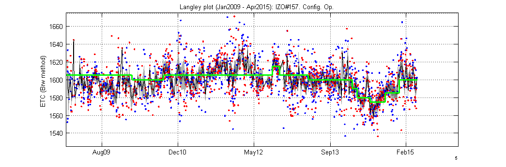 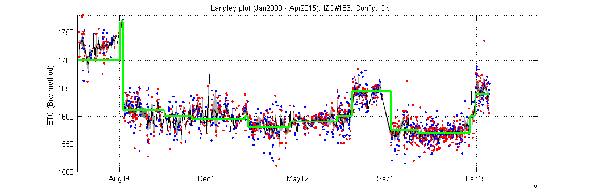 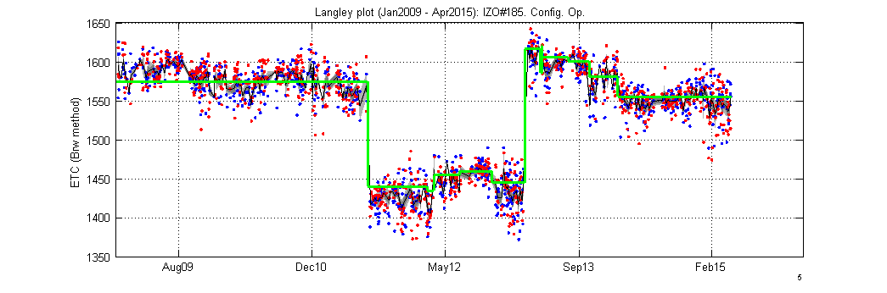